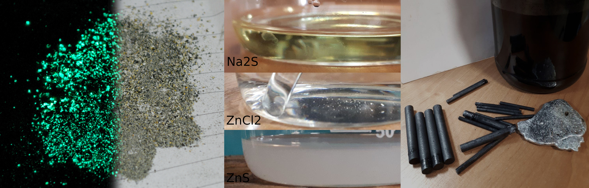

Batteries (not alkaline) are made out of zinc outer shell, graphite core and electrolyte which is stored in a powder molybdenum(IV) oxide. Except for a electrolyte remaining substances can be easily processed at home for useful components. Firstly I removed any foil packaging and zinc off batteries, then simply removed graphite and stored powder in a separate container. Molybdenum oxide must be washed few times and dried to get rid of the electrolyte. Graphite rods are of great quality for arc furnace because of high purity, but primarily they must be burned with torch to get rid of electrolyte. They also find use as electrodes in electrolysis or EMD process. Thermite can be obtained out of molybdenum oxide by simply mixing it with aluminum powder, however my trial failed. I assume it was caused by too low purity in a mix (You can also make a few chemicals out of it but most are toxic). Zinc is very useful as it can be easily melted to a cast.
When zinc powder is mixed with sulfur it can be burned to produce zinc sulfide which glows (left picture) in the dark and is one of first scintillations used in kinescope monitors. Burning it is a spectacular process sadly in which large amount of impurities are produced. When zinc sulfide is burned in a presence of air it is quickly decomposed to zinc oxide so burning small amounts at once is probably a good way to go. However, there is an alternative for obtaining zinc sulfide. Zinc metal can be dissolved in hydrochloric acid to produce zinc chloride and mixed with easily obtainable sodium sulfide or potassium sufide. I used sodium hydroxide with sulfuric acid and burned the product with carbon to produce sodium sulfide which can be mixed with water to remove redundant carbon. Both salts are strongly dissolvable in water but zinc sulfate isn’t which is great since it will be precipitated from reaction in a form of a colloidal solution. Obtained liquid displays strong Tyndall effect. Sadly zinc sulfate in this for is of wrong allotropic form which can be changed by heating dried sulfate in absence of air. Unfortunately I couldn’t yet figured out how to separate it from salts in a solution to dry it. You can see thermal synthesis of ZnS here.